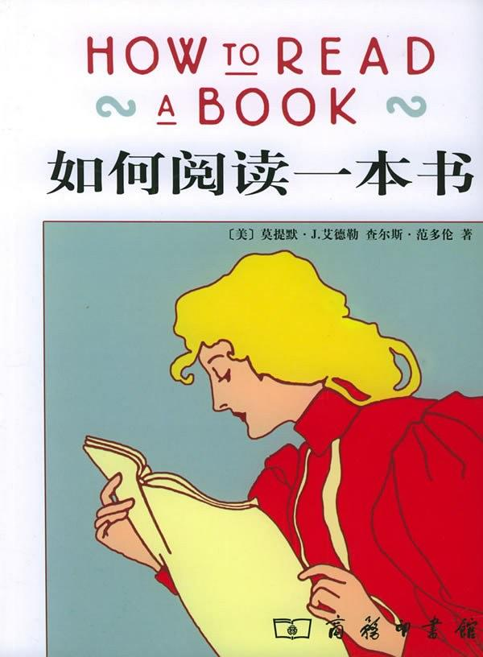

<!-- build time:Thu Aug 10 2023 18:07:33 GMT+0800 (China Standard Time) --><!DOCTYPE html><html><head><meta name="generator" content="Hexo 3.8.0"><meta charset="utf-8"><meta http-equiv="X-UA-Compatible" content="IE=edge"><meta name="HandheldFriendly" content="True"><meta name="viewport" content="width=device-width,initial-scale=1,maximum-scale=1"><meta name="description" content="最近读了 《如何阅读一本书》， 这本书是实用类书， 教我们如何把“阅读”这件事情做好， 我觉得有点用处， 值得总结一下。 我并不会把书中的很多概念搬出来， 从而避免造成额外的认知负荷； 我只会把自己总结后的关于“阅读一本书的步骤”写下来， 如果感兴趣， 你也可以亲自去阅读这本书。主动阅读主动阅读最重要的就是： 在阅读时提问题， 这可以让你在阅读时保持清醒， 下面这几个问题可供你参考：你正读的这本书"><meta name="keywords" content="untagged"><meta property="og:type" content="article"><meta property="og:title" content="《如何阅读一本书》 读后感"><meta property="og:url" content="https://hunter-gu.github.io/personal-blog/2019/12/21/how-to-read-a-book-after-reading/index.html"><meta property="og:site_name" content="Nail&#39;s Blog"><meta property="og:description" content="最近读了 《如何阅读一本书》， 这本书是实用类书， 教我们如何把“阅读”这件事情做好， 我觉得有点用处， 值得总结一下。 我并不会把书中的很多概念搬出来， 从而避免造成额外的认知负荷； 我只会把自己总结后的关于“阅读一本书的步骤”写下来， 如果感兴趣， 你也可以亲自去阅读这本书。主动阅读主动阅读最重要的就是： 在阅读时提问题， 这可以让你在阅读时保持清醒， 下面这几个问题可供你参考：你正读的这本书"><meta property="og:locale" content="default"><meta property="og:image" content="https://hunter-gu.github.io/personal-blog/2019/12/21/how-to-read-a-book-after-reading/s1670978.jpg"><meta property="og:updated_time" content="2023-03-05T07:09:36.651Z"><meta name="twitter:card" content="summary"><meta name="twitter:title" content="《如何阅读一本书》 读后感"><meta name="twitter:description" content="最近读了 《如何阅读一本书》， 这本书是实用类书， 教我们如何把“阅读”这件事情做好， 我觉得有点用处， 值得总结一下。 我并不会把书中的很多概念搬出来， 从而避免造成额外的认知负荷； 我只会把自己总结后的关于“阅读一本书的步骤”写下来， 如果感兴趣， 你也可以亲自去阅读这本书。主动阅读主动阅读最重要的就是： 在阅读时提问题， 这可以让你在阅读时保持清醒， 下面这几个问题可供你参考：你正读的这本书"><meta name="twitter:image" content="https://hunter-gu.github.io/personal-blog/2019/12/21/how-to-read-a-book-after-reading/s1670978.jpg"><link rel="shortcut icon" href="/personal-blog/images/favicon.ico"><link rel="icon" type="image/png" href="/personal-blog/images/favicon-192x192.png" sizes="192x192"><link rel="apple-touch-icon" sizes="180x180" href="/personal-blog/images/apple-touch-icon.png"><title>《如何阅读一本书》 读后感</title><link rel="stylesheet" href="/personal-blog/css/style.css"><link rel="stylesheet" href="/personal-blog/css/rtl.css"></head><body class="max-width mx-auto px3 ltr"><div id="header-post"><a id="menu-icon" href="#"><i class="fas fa-bars fa-lg"></i></a> <a id="menu-icon-tablet" href="#"><i class="fas fa-bars fa-lg"></i></a> <a id="top-icon-tablet" href="#" onclick='$("html, body").animate({scrollTop:0},"fast")' style="display:none"><i class="fas fa-chevron-up fa-lg"></i></a> <span id="menu"><span id="nav"><ul><li><a href="/personal-blog/">Home</a></li><li><a href="/personal-blog/archives/">Writing</a></li><li><a href="/personal-blog/about/">About</a></li><li><a href="/personal-blog/tags/">Tag</a></li><li><a href="/personal-blog/categories/">categories</a></li><li><a href="/personal-blog/inspiration/">inspiration</a></li></ul></span><br><span id="actions"><ul><li><a class="icon" href="/personal-blog/2020/01/08/review-2019-and-preview-2020/"><i class="fas fa-chevron-left" aria-hidden="true" onmouseover='$("#i-prev").toggle()' onmouseout='$("#i-prev").toggle()'></i></a></li><li><a class="icon" href="/personal-blog/2019/11/07/blob-api/"><i class="fas fa-chevron-right" aria-hidden="true" onmouseover='$("#i-next").toggle()' onmouseout='$("#i-next").toggle()'></i></a></li><li><a class="icon" href="#" onclick='$("html, body").animate({scrollTop:0},"fast")'><i class="fas fa-chevron-up" aria-hidden="true" onmouseover='$("#i-top").toggle()' onmouseout='$("#i-top").toggle()'></i></a></li><li><a class="icon" href="#"><i class="fas fa-share-alt" aria-hidden="true" onmouseover='$("#i-share").toggle()' onmouseout='$("#i-share").toggle()' onclick='return $("#share").toggle(),!1'></i></a></li></ul><span id="i-prev" class="info" style="display:none">Previous post</span> <span id="i-next" class="info" style="display:none">Next post</span> <span id="i-top" class="info" style="display:none">Back to top</span> <span id="i-share" class="info" style="display:none">Share post</span></span><br><div id="share" style="display:none"><ul><li><a class="icon" href="http://www.facebook.com/sharer.php?u=https://hunter-gu.github.io/personal-blog/2019/12/21/how-to-read-a-book-after-reading/"><i class="fab fa-facebook" aria-hidden="true"></i></a></li><li><a class="icon" href="https://twitter.com/share?url=https://hunter-gu.github.io/personal-blog/2019/12/21/how-to-read-a-book-after-reading/&text=《如何阅读一本书》 读后感"><i class="fab fa-twitter" aria-hidden="true"></i></a></li><li><a class="icon" href="http://www.linkedin.com/shareArticle?url=https://hunter-gu.github.io/personal-blog/2019/12/21/how-to-read-a-book-after-reading/&title=《如何阅读一本书》 读后感"><i class="fab fa-linkedin" aria-hidden="true"></i></a></li><li><a class="icon" href="https://pinterest.com/pin/create/bookmarklet/?url=https://hunter-gu.github.io/personal-blog/2019/12/21/how-to-read-a-book-after-reading/&is_video=false&description=《如何阅读一本书》 读后感"><i class="fab fa-pinterest" aria-hidden="true"></i></a></li><li><a class="icon" href="mailto:?subject=《如何阅读一本书》 读后感&body=Check out this article: https://hunter-gu.github.io/personal-blog/2019/12/21/how-to-read-a-book-after-reading/"><i class="fas fa-envelope" aria-hidden="true"></i></a></li><li><a class="icon" href="https://getpocket.com/save?url=https://hunter-gu.github.io/personal-blog/2019/12/21/how-to-read-a-book-after-reading/&title=《如何阅读一本书》 读后感"><i class="fab fa-get-pocket" aria-hidden="true"></i></a></li><li><a class="icon" href="http://reddit.com/submit?url=https://hunter-gu.github.io/personal-blog/2019/12/21/how-to-read-a-book-after-reading/&title=《如何阅读一本书》 读后感"><i class="fab fa-reddit" aria-hidden="true"></i></a></li><li><a class="icon" href="http://www.stumbleupon.com/submit?url=https://hunter-gu.github.io/personal-blog/2019/12/21/how-to-read-a-book-after-reading/&title=《如何阅读一本书》 读后感"><i class="fab fa-stumbleupon" aria-hidden="true"></i></a></li><li><a class="icon" href="http://digg.com/submit?url=https://hunter-gu.github.io/personal-blog/2019/12/21/how-to-read-a-book-after-reading/&title=《如何阅读一本书》 读后感"><i class="fab fa-digg" aria-hidden="true"></i></a></li><li><a class="icon" href="http://www.tumblr.com/share/link?url=https://hunter-gu.github.io/personal-blog/2019/12/21/how-to-read-a-book-after-reading/&name=《如何阅读一本书》 读后感&description="><i class="fab fa-tumblr" aria-hidden="true"></i></a></li><li><a class="icon" href="https://news.ycombinator.com/submitlink?u=https://hunter-gu.github.io/personal-blog/2019/12/21/how-to-read-a-book-after-reading/&t=《如何阅读一本书》 读后感"><i class="fab fa-hacker-news" aria-hidden="true"></i></a></li></ul></div><div id="toc"><ol class="toc"><li class="toc-item toc-level-2"><a class="toc-link" href="#主动阅读"><span class="toc-number">1.</span> <span class="toc-text">主动阅读</span></a></li><li class="toc-item toc-level-2"><a class="toc-link" href="#阅读一本书的步骤"><span class="toc-number">2.</span> <span class="toc-text">阅读一本书的步骤</span></a><ol class="toc-child"><li class="toc-item toc-level-3"><a class="toc-link" href="#快速阅读"><span class="toc-number">2.1.</span> <span class="toc-text">快速阅读</span></a></li><li class="toc-item toc-level-3"><a class="toc-link" href="#仔细阅读"><span class="toc-number">2.2.</span> <span class="toc-text">仔细阅读</span></a></li><li class="toc-item toc-level-3"><a class="toc-link" href="#主题阅读"><span class="toc-number">2.3.</span> <span class="toc-text">主题阅读</span></a></li></ol></li><li class="toc-item toc-level-2"><a class="toc-link" href="#附录"><span class="toc-number">3.</span> <span class="toc-text">附录</span></a></li></ol></div></span></div><div class="content index py4"><article class="post" itemscope itemtype="http://schema.org/BlogPosting"><header><h1 class="posttitle" itemprop="name headline">《如何阅读一本书》 读后感</h1><div class="meta"><span class="author" itemprop="author" itemscope itemtype="http://schema.org/Person"><span itemprop="name">Nail's Blog</span></span><div class="postdate"><time datetime="2019-12-21T15:04:26.000Z" itemprop="datePublished">2019-12-21</time></div><div class="article-category"><i class="fas fa-archive"></i> <a class="category-link" href="/personal-blog/categories/Uncategorized/">Uncategorized</a></div><div class="article-tag"><i class="fas fa-tag"></i> <a class="tag-link" href="/personal-blog/tags/untagged/">untagged</a></div></div></header><div class="content" itemprop="articleBody"><p></p><p>最近读了 <a href="https://book.douban.com/subject/1013208/" target="_blank" rel="noopener">《如何阅读一本书》</a>， 这本书是实用类书， 教我们如何把“阅读”这件事情做好， 我觉得有点用处， 值得总结一下。 我并不会把书中的很多概念搬出来， 从而避免造成额外的认知负荷； 我只会把自己总结后的关于“阅读一本书的步骤”写下来， 如果感兴趣， 你也可以亲自去阅读这本书。</p><h2 id="主动阅读"><a href="#主动阅读" class="headerlink" title="主动阅读"></a>主动阅读</h2><p>主动阅读最重要的就是： <strong>在阅读时提问题</strong>， 这可以让你在阅读时保持清醒， 下面这几个问题可供你参考：</p><ul><li>你正读的这本书在谈什么？</li><li>作者详细说了什么？</li><li>这本书有道理吗？ 是全部有道理还是部分有道理？</li><li>这本书和你自己有什么关系？</li></ul><p>主动阅读是你在读一本书时， 时时刻刻应该做的事情， 你需要把这件事练习直到变成习惯。</p><h2 id="阅读一本书的步骤"><a href="#阅读一本书的步骤" class="headerlink" title="阅读一本书的步骤"></a>阅读一本书的步骤</h2><h3 id="快速阅读"><a href="#快速阅读" class="headerlink" title="快速阅读"></a>快速阅读</h3><p>1.看书名、 序言、 副标题、 宗旨、 写作角度等<br>2.看目录页， 然后对书的架构进行概括<br>3.看索引、 重点摘要、 开头和结尾<br>4.看作者的信息<br>5.挑几个和主题相关的章节快速看看<br>6.随便翻看几段或者几页， 不用太多</p><p>做完上面这些步骤， 你就可以回答下面这两个问题了：</p><ul><li>这本书在谈什么？</li><li>作者详细的说了什么？</li></ul><p><strong>在你能回答上面这两个问题同时， 你也就知道这本书是否值得你继续仔细地阅读了！</strong></p><p>注意， 不是所有书都值得仔细阅读的， 相反， <strong>只有很少的书值得仔细阅读</strong>， 大部分书只需要粗读。</p><h3 id="仔细阅读"><a href="#仔细阅读" class="headerlink" title="仔细阅读"></a>仔细阅读</h3><p>接着是<strong>仔细阅读的步骤</strong>：</p><ul><li>1.给这本书分类： 是实用性还是理论性</li><li>2.读书时找出关键字/句， 抓住作者的主旨</li><li>3.找出作者想问的问题， 或者是作者想解决的问题</li></ul><p>步骤 2、 3 是你读整本书时都要做的事！ 并且注意， <strong>不要用同样的速度读完一本书</strong>。</p><ul><li>4.当你读完一本书后， 对书的内容进行概括</li><li>5.按照顺序， 列出整本书的重要部分</li><li>6.尝试批评这本书<ul><li><strong>证明</strong>作者知识不足</li><li><strong>证明</strong>作者的错误</li><li><strong>证明</strong>作者逻辑不合理</li><li><strong>证明</strong>作者分析得不完整</li></ul></li></ul><p>上面的步骤是你读完整本书后要做的事！</p><p>你可能会认为读完当前这本书后， 阅读的整个阶段已经完成了， 事实上也确实如此。 但是对于这本书谈论的主题， 仅仅通过这一本书， 你仍旧没有什么发言权， 也就是这本书和你的关系是什么这个问题， 仍旧没被解答。</p><h3 id="主题阅读"><a href="#主题阅读" class="headerlink" title="主题阅读"></a>主题阅读</h3><p>接着是<strong>读完当前书后该做的事情</strong>：</p><ul><li>1.准备一个和当前主题相关的书的书单</li><li>2.确认一下这些书， 确实和当前这个主题有关， 并且值得阅读（你一定已经知道如何确认这个问题了）</li><li>3.找出相关的章节， 进行仔细的阅读（你一定也知道， 如何进行仔细阅读了）， 列出异同点</li><li>4.理清问题， 界定主题下的次要议题</li><li>5.分析讨论</li><li>6.得到你对于这个主题看法</li></ul><h2 id="附录"><a href="#附录" class="headerlink" title="附录"></a>附录</h2><p>最后， 附上我整理的<a href="http://naotu.baidu.com/file/ec920cec143632be968b8aaa72fa55cd?token=8a81edbcdde8b9c5" target="_blank" rel="noopener">脑图</a>。</p></div></article><div id="footer-post-container"><div id="footer-post"><div id="nav-footer" style="display:none"><ul><li><a href="/personal-blog/">Home</a></li><li><a href="/personal-blog/archives/">Writing</a></li><li><a href="/personal-blog/about/">About</a></li><li><a href="/personal-blog/tags/">Tag</a></li><li><a href="/personal-blog/categories/">categories</a></li><li><a href="/personal-blog/inspiration/">inspiration</a></li></ul></div><div id="toc-footer" style="display:none"><ol class="toc"><li class="toc-item toc-level-2"><a class="toc-link" href="#主动阅读"><span class="toc-number">1.</span> <span class="toc-text">主动阅读</span></a></li><li class="toc-item toc-level-2"><a class="toc-link" href="#阅读一本书的步骤"><span class="toc-number">2.</span> <span class="toc-text">阅读一本书的步骤</span></a><ol class="toc-child"><li class="toc-item toc-level-3"><a class="toc-link" href="#快速阅读"><span class="toc-number">2.1.</span> <span class="toc-text">快速阅读</span></a></li><li class="toc-item toc-level-3"><a class="toc-link" href="#仔细阅读"><span class="toc-number">2.2.</span> <span class="toc-text">仔细阅读</span></a></li><li class="toc-item toc-level-3"><a class="toc-link" href="#主题阅读"><span class="toc-number">2.3.</span> <span class="toc-text">主题阅读</span></a></li></ol></li><li class="toc-item toc-level-2"><a class="toc-link" href="#附录"><span class="toc-number">3.</span> <span class="toc-text">附录</span></a></li></ol></div><div id="share-footer" style="display:none"><ul><li><a class="icon" href="http://www.facebook.com/sharer.php?u=https://hunter-gu.github.io/personal-blog/2019/12/21/how-to-read-a-book-after-reading/"><i class="fab fa-facebook fa-lg" aria-hidden="true"></i></a></li><li><a class="icon" href="https://twitter.com/share?url=https://hunter-gu.github.io/personal-blog/2019/12/21/how-to-read-a-book-after-reading/&text=《如何阅读一本书》 读后感"><i class="fab fa-twitter fa-lg" aria-hidden="true"></i></a></li><li><a class="icon" href="http://www.linkedin.com/shareArticle?url=https://hunter-gu.github.io/personal-blog/2019/12/21/how-to-read-a-book-after-reading/&title=《如何阅读一本书》 读后感"><i class="fab fa-linkedin fa-lg" aria-hidden="true"></i></a></li><li><a class="icon" href="https://pinterest.com/pin/create/bookmarklet/?url=https://hunter-gu.github.io/personal-blog/2019/12/21/how-to-read-a-book-after-reading/&is_video=false&description=《如何阅读一本书》 读后感"><i class="fab fa-pinterest fa-lg" aria-hidden="true"></i></a></li><li><a class="icon" href="mailto:?subject=《如何阅读一本书》 读后感&body=Check out this article: https://hunter-gu.github.io/personal-blog/2019/12/21/how-to-read-a-book-after-reading/"><i class="fas fa-envelope fa-lg" aria-hidden="true"></i></a></li><li><a class="icon" href="https://getpocket.com/save?url=https://hunter-gu.github.io/personal-blog/2019/12/21/how-to-read-a-book-after-reading/&title=《如何阅读一本书》 读后感"><i class="fab fa-get-pocket fa-lg" aria-hidden="true"></i></a></li><li><a class="icon" href="http://reddit.com/submit?url=https://hunter-gu.github.io/personal-blog/2019/12/21/how-to-read-a-book-after-reading/&title=《如何阅读一本书》 读后感"><i class="fab fa-reddit fa-lg" aria-hidden="true"></i></a></li><li><a class="icon" href="http://www.stumbleupon.com/submit?url=https://hunter-gu.github.io/personal-blog/2019/12/21/how-to-read-a-book-after-reading/&title=《如何阅读一本书》 读后感"><i class="fab fa-stumbleupon fa-lg" aria-hidden="true"></i></a></li><li><a class="icon" href="http://digg.com/submit?url=https://hunter-gu.github.io/personal-blog/2019/12/21/how-to-read-a-book-after-reading/&title=《如何阅读一本书》 读后感"><i class="fab fa-digg fa-lg" aria-hidden="true"></i></a></li><li><a class="icon" href="http://www.tumblr.com/share/link?url=https://hunter-gu.github.io/personal-blog/2019/12/21/how-to-read-a-book-after-reading/&name=《如何阅读一本书》 读后感&description="><i class="fab fa-tumblr fa-lg" aria-hidden="true"></i></a></li><li><a class="icon" href="https://news.ycombinator.com/submitlink?u=https://hunter-gu.github.io/personal-blog/2019/12/21/how-to-read-a-book-after-reading/&t=《如何阅读一本书》 读后感"><i class="fab fa-hacker-news fa-lg" aria-hidden="true"></i></a></li></ul></div><div id="actions-footer"><a id="menu" class="icon" href="#" onclick='return $("#nav-footer").toggle(),!1'><i class="fas fa-bars fa-lg" aria-hidden="true"></i> Menu</a> <a id="toc" class="icon" href="#" onclick='return $("#toc-footer").toggle(),!1'><i class="fas fa-list fa-lg" aria-hidden="true"></i> TOC</a> <a id="share" class="icon" href="#" onclick='return $("#share-footer").toggle(),!1'><i class="fas fa-share-alt fa-lg" aria-hidden="true"></i> Share</a> <a id="top" style="display:none" class="icon" href="#" onclick='$("html, body").animate({scrollTop:0},"fast")'><i class="fas fa-chevron-up fa-lg" aria-hidden="true"></i> Top</a></div></div></div><footer id="footer"><div class="footer-left">Copyright &copy; 2016-2023 Nail Hunter</div><div class="footer-right"><nav><ul><li><a href="/personal-blog/">Home</a></li><li><a href="/personal-blog/archives/">Writing</a></li><li><a href="/personal-blog/about/">About</a></li><li><a href="/personal-blog/tags/">Tag</a></li><li><a href="/personal-blog/categories/">categories</a></li><li><a href="/personal-blog/inspiration/">inspiration</a></li></ul></nav></div></footer></div><link rel="stylesheet" href="/personal-blog/lib/font-awesome/css/all.min.css"><link rel="stylesheet" href="/personal-blog/lib/justified-gallery/css/justifiedGallery.min.css"><script src="/personal-blog/lib/jquery/jquery.min.js"></script><script src="/personal-blog/lib/justified-gallery/js/jquery.justifiedGallery.min.js"></script><script src="/personal-blog/lib/clipboard/clipboard.min.js"></script><script type="text/javascript">$(function() {
    // copy-btn HTML
    var btn = "<span class=\"btn-copy tooltipped tooltipped-sw\" aria-label=\"Copy to clipboard!\">";
    btn += '<i class="far fa-clone"></i>';
    btn += '</span>';
    // mount it!
    $(".highlight table").before(btn);
    var clip = new ClipboardJS('.btn-copy', {
      text: function(trigger) {
        return Array.from(trigger.nextElementSibling.querySelectorAll('.code')).reduce((str,it)=>str+it.innerText+'\n','')
      }
    });
    clip.on('success', function(e) {
      e.trigger.setAttribute('aria-label', "Copied!");
      e.clearSelection();
    })
  })</script><script src="/personal-blog/js/main.js"></script><script type="text/javascript">var _hmt=_hmt||[];!function(){var e=document.createElement("script");e.src="https://hm.baidu.com/hm.js?d74a499667241a64116720b82963068b";var t=document.getElementsByTagName("script")[0];t.parentNode.insertBefore(e,t)}()</script><script src="https://unpkg.com/mermaid@8.4.8/dist/mermaid.min.js"></script><script>window.mermaid&&mermaid.initialize({theme:"forest"})</script></body></html><!-- rebuild by neat -->